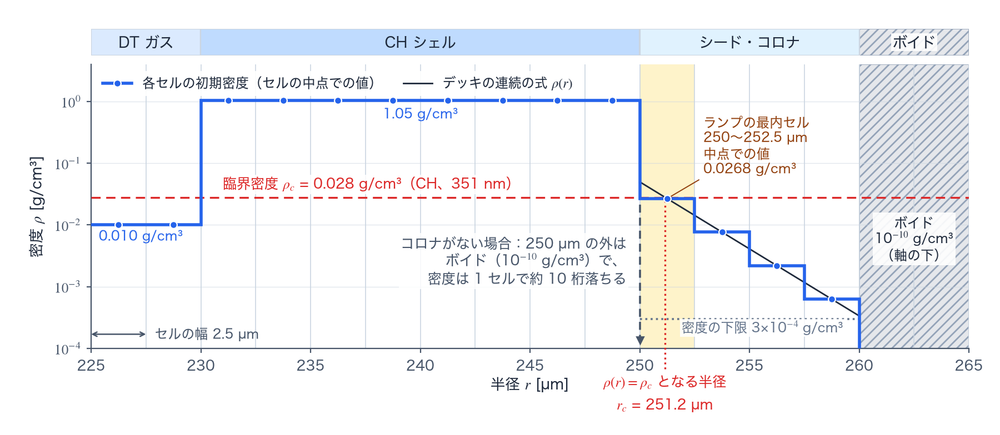

検証とベンチマーク reference
TENRYU の検証（verification）は、個々の物理カーネルを閉じた形の解（closed-form solution）で確かめる小さな検査から、基準解（golden）との回帰試験（regression test）、再現性の監査（reproducibility audit）、2D RZ（軸対称の (R, Z) 座標）の統合試験群（integration test suite）、外部コードとの比較へと段階的に進む。上位の試験ほど多くの物理を同時に通すが、下位の解析的な検査を置き換えるものではない。検査の各種類は、どの要求が満たされなくなったかを切り分けられるように、それぞれ異なる正解の基準と許容帯をもつ。基準解、シード・コロナ（seed corona）、弦追跡（chord ray tracing）などこの頁で使う用語と、試験名に現れるタグは、凡例で説明する。
検証の階層
この階層は、単一の演算子に対する数式、構成を固定した数値の軌道、実行ごとの再現性、複数の演算子の連成、別実装との比較、という順に証拠を積み上げる。小さな検査は符号・単位・係数・境界条件の誤りを局所化し、統合試験群は、正しい部品が実際の時間ループ、メッシュ、エネルギー台帳（energy ledger）のなかでも整合することを確認する。外部コードとの比較は妥当性確認（validation）の補助的な証拠であり、内部の検証の代用にはならない。
| 検査の種類 | 何を検査するか | どこで走るか |
|---|---|---|
| 1. 単体・解析解 | 単一の物理カーネル、離散演算子、保存の恒等式を、閉じた形の解や独立な実装と比較する。 | ctest の verify_sedov、verify_noh、Marshak / SNB / レーザーの各パターン。対応する多くは tenryu verify <name> でも実行できる。 |
| 2. 基準解との回帰 | 固定したデッキ（deck）の履歴指標が、承認済みの JSON の基準値と許容差の範囲で一致するかを検査する。 | ctest -R verify_gxii_1d_fld_regression または tenryu verify gxii_1d_fld_regression。 |
| 3. 再現性 | 同じ入力での反復実行や、必要に応じてランク数を変えた実行を、ビット単位（bitwise）・縮約順序の帯（reduction-order band）・雑音帯（noise band）のいずれかの判定基準（後述の表参照）で比較する。 | ctest -L mpi_gate（ランク数を変えた実行を P=1 と比べる）と、各連成試験群における反復実行・機能オフ（feature-off）の経路。 |
| 4. 統合試験群 | 2D RZ で流体、輻射、材料との結合、メッシュ、境界のエネルギー台帳を同時に検査する。 | CTest の I1・I2・I3・I5・I6 の試験群（I 系列の表）。完全に連成した試験は strict を名前に含み、長時間かかる試験には expensive のラベルが付く。 |
| 5. コード間ベンチマーク | 入力の物理的な意味をそろえたうえで、別のコードと傾向や吸収量を比較する。 | HELIOS との、照射条件をそろえた LTE（local thermodynamic equilibrium、局所熱力学平衡）の比較。コミットごとの通常の検査ではなく、記録を伴うベンチマークである。 |
解析解・単体検査のカタログ
解析解（analytic solution）による検査の価値は、単に実行が完走することではなく、実装が誤っていれば異なる値を返す「正解の基準」をもつことにある。可能な箇所では、参照となる計算は実運用の計算と同じ補助関数を呼ばず、独立な積分、離散的な固有値、あるいは文献の解から作る。
| 対象 | 参照と主な観測量 | 代表的な検査の名前 |
|---|---|---|
| 流体 | Sedov–Taylor の爆風（blast wave）は、衝撃波の半径・密度分布・エネルギーを相似解（similarity solution）と照合する。Noh は、衝撃波の位置、圧縮のプラトー（plateau）、上流の流れ、保存を、幾何ごとの解析値と照合する。 | sedov、noh、noh_planar、noh_cylindrical |
| 多群 FLD | 8 群の Marshak のプラトーを、独立なプランク積分（Planck integral）から得たスペクトルと照合する。振動数に依存する緩和（relaxation）では、群ごとの不透明度の配線を、閉じた形の後退オイラー応答（backward-Euler response）で検査する。 | fld_1d_mg_planar_marshak_spectrum、fld_1d_mg_planar_freqdep_relaxation |
| SNB 熱伝導 | 離散的な分散関係との厳しい比較と、Epperlein–Short や VFP（Vlasov–Fokker–Planck 運動論計算）のデータに基づく物理的な帯 [4,5] とを分離する。格子と群の数を変えた一連の計算、単調性、局所極限（local limit）、保存も同じ試験群で確認する。 | snb_local_limit_1d、snb_dispersion_1d、snb_conservation_1d |
| レーザー・不透明度 | 一様な媒質での Beer–Lambert 減衰、解析的な屈折率分布における転回点（turning point）、3 次元光線の吸収と沈着のエネルギー台帳を検査し、rho*kappa の掛け忘れや二重掛けも検出する。 | laser_beer_lambert、laser_3d_beer_lambert、laser_3d_refraction |
| 輻射の波面 | Hammer–Rosen の超音速 Marshak 波 [3] について、波面の等値面と、入射・逸出のエネルギー台帳を摂動論（perturbation theory）の解析解と照合する。 | hammer_rosen_supersonic |
許容差は一律ではない。たとえば決定論的な Beer–Lambert の光線追跡（ray tracing）は統計誤差をもたないため、厳しい相対誤差を要求できる。一方、文献の図から読み取った SNB の物理的な帯は、離散演算子の精度に対する検査とは分けて扱い、帯を広げて、高波数側にあるモデルの既知の適用限界まで「合格」に見せることはしない。
GXII ベンチマーク
本ドキュメントで GXII とは、激光 XII 号（GEKKO XII）— 大阪大学レーザー科学研究所の 12 ビーム Nd:ガラスレーザー — のことである。TENRYU の常設アプリケーションベンチマークは GXII 相当の直接照射（direct drive）爆縮で、正十二面体の面に配置した 12 ビーム（実装上は正二十面体の 12 頂点方向）が 500 µm カプセルを照射する。回帰デッキ examples/verification/gxii_1d_fld_regression.py は次の構成を固定している。
| 項目 | 回帰デッキでの値 |
|---|---|
| ターゲット | CH（炭素と水素が 1 対 1 のプラスチック）のシェル（\(\rho=1.05\) g/cm³、厚さ 20 µm、外半径 250 µm；\(A=6.5\)、\(Z=3.5\)）と内側の DT（deuterium–tritium、重水素と三重水素）ガス（0.010 g/cm³；\(A=2.5\)、\(Z=1\)）。外側はボイド（void）で、Material.is_void=True の材料 VOID として置く。 |
| シード・コロナ | シェルの外面の外側に初期状態として置く低密度の層（凡例）。指数関数的に薄くなるランプ \(\rho=0.05\,e^{-(r-250\,\mu m)/2\,\mu m}\) g/cm³ を、外半径から 10 µm の範囲に置き、密度の下限を \(3\times10^{-4}\) g/cm³ とする。351 nm の CH の臨界密度（0.028 g/cm³）に達する半径は 251.2 µm で、ランプの最内セル（250〜252.5 µm）にある（図A）。 |
| 駆動 | 公称 10 kJ / 1 ns の矩形パルス（square pulse。12 ビームの総計で 10 TW、立ち上がりと立ち下がりは各 10 ps の直線で、入射エネルギーは 9.9 kJ）、\(\lambda=351\) nm（3 倍高調波、third harmonic、3ω）；f/3 の 12 ビーム、超ガウス形（super-Gaussian）のスポット（\(w_0=200\) µm、\(m=4\)）、ビームあたり 1000 本の弦追跡（凡例）。 |
| 物理 | 2 温度ラグランジュ流体（Lagrangian hydrodynamics）、Spitzer–Härm 伝導、20 群の FLD（対数間隔の群境界 0.01–100 eV）と Levermore–Pomraning の流束制限関数（flux limiter）；理想気体（ideal gas）の状態方程式（equation of state、EOS。\(\gamma=5/3\)）、一定の質量不透明度（mass opacity）\(\kappa=100\) cm²/g、完全電離（full ionization）に固定した平均電離度（mean ionization）\(\bar Z\)。交差ビームエネルギー転送（cross-beam energy transfer、CBET）とホット電子（hot electron）はオフ。 |
| 格子・時間 | 0–500 µm を 200 セルの一様ラグランジュ格子、2 ns まで。 |

各物理カーネルの頁が引用する「GXII」条件 — 基準解の吸収率、コロナのサブステップ数、S8/S16 比較、Studio の「GXII 級」プリセット — は、このデッキまたはその明示された変種を指す。「GXII 級」と書かれた箇所の物理的定義は、この表のターゲットと駆動のパラメータである。
基準解との回帰と、その取り直し
verify_gxii_1d_fld_regression は、レーザー、流体、熱伝導、2 温度の物質、FLD を通る 1D 球対称爆縮の、実運用向けの回帰試験である。吸収したレーザーエネルギーは実行終了時の累積値から、最大圧縮時刻（bang time、bang_time_s）、rho_peak_max、面密度（areal density）rhoR_max、中心温度 Tc_max は最終スナップショットではなく履歴の時系列から取り出す。最大圧縮時刻は、最大密度の 10% 以上の密度をもつセルの質量加重平均半径が最小になる時刻である。rho_peak_max、rhoR_max、Tc_max は、各ステップの最大密度、面密度（最大密度の 10% 以上の密度をもつセルについて、密度にセルの半径方向の幅を掛けて足した値）、中心温度（中心に最も近いセルの電子温度）を、実行全体にわたって最大にした値である。吸収エネルギー、rho_peak_max、rhoR_max、Tc_max は基準解から相対 10% 以内、最大圧縮時刻は 5% 以内であることを要求する。shell_r_min（最大圧縮時刻での上の平均半径）は参考値である。run_profile（格子・実行長など実行条件の記録）が一致しない場合は比較そのものを失敗させ、短縮した実行や別の格子を同じ基準値への合格に見せかけられないようにしている。
基準解は「正解であることの証明」ではなく、同じ格子と実行プロファイルにおける変化の検出器である。取り直しが許されるのは、既知の不具合の修正、物理アルゴリズムや基準となる数値パラメータの変更、あるいはコードの責任者が承認した理由がある場合だけである。更新には、理由、旧値と新値の定量的な差、複数解像度での収束データ、そしてレビューを伴わせる。説明のない許容差の緩和や、失敗した実行の値へ合わせにいくことは、更新の理由にならない。取り直しは tenryu verify gxii_1d_fld_regression --generate-golden で行い、--generate-golden に対応する試験はこの 1 つだけである。
再現性の検査
再現性の検査は、次のいずれかの判定基準で判定する。
| 判定基準 | 要件 |
|---|---|
| ビット単位（bitwise） | 反復実行間（宣言があればランク数を変えた実行間も）のビット単位の一致。 |
| 縮約順序の帯（reduction-order band） | MPI の縮約（Allreduce(SUM) など）の加算順序だけが変わり得る場合。各ランクの担当区間の場について、P=1 の実行との差の最大値を P=1 の場全体の最大値で割った値が、帯の幅以下であることを要求する。帯の幅は試験ごとに指定する（tests/parallel/run_parallel_gate.py の --band-default、既定は \(10^{-13}\)）。登録している試験の幅は、2D の SN と 2D の燃焼で \(10^{-13}\)、レーザーメッシュの 2D（4 ランク）の沈着以外の場で \(10^{-12}\) である。 |
| 雑音帯（noise band） | 同じ構成の反復実行どうしの差から決めた帯（検査のなかで反復実行を行って決める自己較正した帯、または複数本の実行から決めて記録した帯）の内側であれば、差を受け入れる基準。反復実行の差が 0 でない経路にだけ使い、デッキと指標ごとに決める。2D RZ の 1 ステップ内の和は固定順なので、反復実行の差が 0 であることを確かめたデッキの帯は空である。 |
| 機能オフの一致（feature-off identity） | 機能を無効化（または一度も発火させない）した実行が、その機能なしの経路とビット単位で一致すること。 |
| 包絡（envelope） | レーザー沈着の場だけに使う。P=1 の実行 3 本の間の差から、最終桁の単位（unit in the last place、ULP）で測った最大の差、差のあるセルの数、差のあるセルが担う沈着の割合の 3 つを求め、それぞれの最大値に余裕係数 4 を掛けた値（下限は 4 ULP、8 セル、\(10^{-12}\)）と、記録した上限（tests/parallel/gate_caps.json）の両方を、P>1 の実行が超えないことを要求する。現在はレーザーメッシュの 2D（4 ランク）の試験だけが使う。 |
決定論的な 1D の経路では、同じバイナリ・入力・GPU 構成による実行について、場と主要な診断量が実行のたびにビット単位で一致することを要求する。GXII の 1D では、レーザーの沈着を光線ごとの専用領域と固定順序の総和に変えた結果、全軌道をビット単位で再現できることが検査の前提になった。物理量に対する広い許容差はツールチェーンの頑健性のために残っていても、同じ構成での反復実行に差を許す根拠にはしない。
2D RZ の流体では、1 ステップの中の浮動小数点の和を、加算の順序がスレッドの実行順に依らないように計算する。節点やセルへの和は、対象 1 つにつき 1 スレッドが接続表のキーの昇順に足す。スカラーの総和は、項目ごとに専用の部分和を書き、固定順の 2 段の縮約で足す。レーザーの沈着は、128 ビット固定小数点の整数の和を 1 回だけ丸める。加算順序に依る浮動小数点の atomicAdd（スレッドの実行順に和をとる原子加算）は、状態、時間刻み、エネルギー台帳、診断に入る和には残していない。残る atomicAdd は、整数の個数、最大値・最小値、番地ごとに書き手が 1 つの加算など順序に依らないものと、1D 専用またはコンパイルされない経路にあるものだけで、ctest -R atomic_add_allowlist が、その理由を記録した一覧にない呼び出しを落とす。このため 2D RZ でも、同じ構成の 2 本の実行は、状態、時間刻み、エネルギー台帳、診断のすべてがビット単位で一致しなければならない。一致しないことは、固定順になっていない和、またはほかの非決定性が残っている印である。この一致は、デッキごとに 2 本の実行を比べて確かめる。
I 系列の 2D RZ 統合試験群
I 系列は単一の「2D 簡易試験」ではなく、参照問題を段階的に、連成した実運用の経路へ移していく階層である。各ハーネス（harness。デッキを走らせて結果を判定するスクリプト）は、デッキを複数の角度の数、不透明度、格子、あるいはソルバの設定で実行し、要約 JSON のすべての必須項目が満たされたときにだけ試験群を合格とする。
| 試験群 | 検査する内容 | CTest での見つけ方 |
|---|---|---|
| I1: グレイ輻射衝撃波の参照解 | 半解析的な（semi-analytic）グレイ輻射衝撃波の参照解 — LR07 と LE08 [6,7]、およびリミッタを切った FLD-CED の常微分方程式（ordinary differential equation、ODE）による参照解（凡例参照）— を 1D で、さらに 2D RZ の z 方向スラブでの計算（半径方向に薄いスラブ内を z 方向に走る平面衝撃波で、半径方向の不変性を判定）を用い、衝撃波、前駆領域（precursor）、保存、参照分布への一致を固定する。 | ctest --test-dir build -R "I1|i1" |
| I2: 多群 FLD のグレイ一致 | 振動数に依らない不透明度のもとで、多群 FLD の群についての和が連成したグレイ計算へ収束すること、波面の位置が群数を増やしたとき（Cauchy の収縮）と格子を細かくしたとき（Richardson の格子列）に収束すること、健全性監査（sanity audit。物質を解くニュートン反復（Newton iteration）がすべて収束し、床の発動や緊急のセル無効化といった非常の処置が一度も働かず、半径方向の不変性が保たれること）と保存を検査する。 | ctest --test-dir build -R "I2|i2.*mgfld" |
| I3: SN 輻射衝撃波 | SN の次数（S4、S8、S16）、不透明度の倍率（1、20、200）、格子を変えた一連の計算にわたって、輻射の分布、流束、前駆領域、物質側の衝撃波、保存、FLD との順序関係、半径方向の不変性を検査する。 | ctest --test-dir build -R "I3|i3.*radshock" |
| I5: 2 温度の輻射衝撃波 | 電子温度 \(T_e\) とイオン温度 \(T_i\) を別に進める 2 温度の計算で、電子とイオンのエネルギー交換が有限の速さのため衝撃波の後ろで \(T_i\) と \(T_e\) が分離するグレイの輻射衝撃波を、2D RZ の z 方向スラブで解き、FLD-CED の 2 温度の ODE 参照解と比べる。衝撃波の前後の窓で、\(T_e\) と \(T_i\) の相対 L2 差が 0.05 以下、\(T_i/T_e-1\) のピークの相対差が 0.10 以下、半径方向の不変性が \(10^{-6}\) 以下であることを要求する。 | ctest --test-dir build -R "I5|i5"（名前に expensive を含む。タイムアウトは 12 時間） |
| I6: SN 多群のグレイ一致 | I3 と同じ SN の輻射衝撃波のデッキを、群数を 2 以上にして走らせ、1 群（グレイ）の SN 計算に一致することを検査する。群の和をとった輻射エネルギー密度と z 方向流束の z 分布について、1 群の計算との相対 L2 差の判定値は \(10^{-3}\) で、3 本の反復実行のばらつきの分だけ許容を広げる。 | ctest --test-dir build -R "I6|i6"（名前に expensive を含む） |
I1 の連成した試験と、I2 / I3 の完全な受け入れ判定の試験は、名前に strict を含み、部分的な簡易試験ではなくハーネスの必須項目をすべて評価する構成である。Catch2 の [.expensive] タグは CTest の expensive ラベルとして公開され、長時間かかる GPU の試験群を短い開発ループから分離する。これは品質を弱める印ではなく、実行時間と計算規模による分類である。
試験のタグと用語の凡例
CTest の試験名と各物理カーネルの頁は、検査の族を短いタグで表す。タグは名前であって強さの序列ではない。「段」（rung）は、ひとつの試験群の内部で、角度の数、不透明度の倍率、格子などの条件を順に変えて走らせる一連の計算の 1 回分を指す。この表は、タグのほかに、この頁と各物理カーネルの頁が使う用語（シード・コロナ、弦追跡、基準解、参照解）も定義する。
| タグ・用語 | 意味 |
|---|---|
| L1 / L2（レーザー） | レーザーの検査の 2 つの水準。L1 = レーザー単独の物理の検査（屈折、Beer–Lambert 減衰、エネルギー台帳、光線数に対する収束）、L2 = レーザーと流体を連成した検査。誤差ノルムの \(L_2\)/\(L_\infty\) とは無関係。 |
| G1–G5（熱伝導） | SNB 非局所伝導の検査系列。G1 = SNB を切った計算と局所モデルのビット単位の一致、G2 = 局所極限と 2 次漸近、G3 = Epperlein–Short 分散、G4 = 保存、G5 = 最大値原理。 |
| G-R / G-K / G-P（核燃焼） | 領域別の燃焼検査系列（燃焼の単体試験のなかの節の名前）。R = 反応率と燃料消費、K = Fraley の飛程と沈着の積分核（kernel）、P = 電子・イオン分配。 |
| H1 / H2（2D 流体） | 2D RZ 流体の参照デッキ。H1 = 平面 Sod、H2 = 円筒 Noh。 |
| I1 / I2 / I3 / I5 / I6 | 2D RZ 統合試験群（I 系列の表）。I1 = グレイ輻射衝撃波、I2 = 多群 FLD のグレイ一致、I3 = SN 輻射衝撃波、I5 = 電子とイオンの温度を別に進める 2 温度の輻射衝撃波、I6 = SN 多群グレイ一致の受け入れ判定。 |
| R2（SN） | 2D RZ の SN 輻射の試験群。SN の次数を S4、S8、S16 と上げた計算の収束（S4 と S16 の相対 L2 差が 0.10 以下、S8 と S16 の差が 0.05 以下で、S8 の差のほうが小さいこと）と、光学的に厚い極限での FLD との 5% 以内の一致などを検査する。EOS の電荷モーメント \(r_2\) とは無関係。 |
| LR07 / LE08 / FLD-CED（I1 の参照解） | I1 の相手になる参照解。Lowrie–Rauenzahn 2007（LR07）と Lowrie–Edwards 2008（LE08）の半解析的グレイ輻射衝撃波 [6,7]、およびエディントン因子（Eddington factor）を 1/3 の定数にして（流束制限関数を使わずに）グレイ FLD を ODE として積分した参照解（FLD-CED、constant-Eddington FLD）。 |
| シード・コロナ（seed corona） | 回帰デッキが、シェルの外面（外半径 250 µm）の外側に初期状態として置く、指数関数的に薄くなる低密度の層。密度は \(\rho=0.05\,e^{-(r-250\,\mu m)/2\,\mu m}\) g/cm³（デッキの変数 RHO_CORONA0 = 0.05 g/cm³、L_CORONA = 2 µm）で、外半径から 10 µm（R_CORONA_END）までの範囲に置き、密度の下限を \(3\times10^{-4}\) g/cm³（RHO_CORONA_MIN）とする。初期の密度分布は、臨界密度に達する半径とセルの境界とともに図Aに示す。この層が加える質量は CH シェルの質量の約 0.5%（1% 未満）である。層がないと、冷たい固体の表面が 1 セルの密度の段になり、351 nm の光線は逆制動輻射の吸収の経路をほとんどもたないまま臨界面で反射して、パルス全体での吸収率が \(4\times10^{-4}\) にとどまり、加熱で広がるコロナが自力で立ち上がらない（デッキのコメントに記録された過去の測定値で、再測定していない）。この層は、レーザーの吸収とコロナの形成に効く。CBET の頁の「シード」（結合係数を求めるとき標本点を出す側の状態）や、乱数の種 Main.seed とは別のものである。 |
| 弦追跡（chord ray tracing） | 1D 球対称の流体で、ビームごとに口径を同じ幅の環（Laser.rays_per_beam 個。1D の既定は 1000）に分け、環ごとに 1 本の光線を、標的の中心を通りビームの向きに固定した (R, Z) 平面の中で、屈折させながら追跡する方法。球対称なので、平面の向きは吸収の分布を変えない。回帰デッキは Laser.mode="raytrace_2d"、rays_per_beam=1000 を使う。詳しくはレーザーの頁で説明する。 |
| 基準解（golden） | 承認した実行の指標値を保存した参照値。回帰デッキの基準解は examples/ で、吸収エネルギー、最大圧縮時刻、rho_peak_max、shell_r_min_cm、rhoR_max、Tc_max_eV、実行条件 run_profile を含む。正解の証明ではなく、変化の検出器である。取り直しの条件と手順は基準解との回帰の節にある。 |
| 参照解（reference solution） | 検査の相手として独立に用意した解。閉じた形の解、半解析的な解（LR07、LE08）、ODE の数値解（FLD-CED）などを指し、基準解（golden）とは別のものである。 |
HELIOS との 1D コード間ベンチマーク
HELIOS — Prism Computational Sciences の商用 1D ラグランジュ輻射流体コード — との LTE 比較では、単に同じ公称レーザーパワーを与えるのではなく、照射条件を対応させたケース — 約 113 µm のガウススポットをほぼ平行ビーム（f/191）で与え、両側とも LTE テーブル不透明度 — を用いることで、初めて意味のある比較の土台が得られた。その条件で測定した吸収率（2026 年 7 月）は TENRYU が約 45%、HELIOS がケースにより約 55–73% であり、この差については要因の帰属を調べた記録が残されている。これらの数字は回帰デッキの吸収率 約 96%（2026-09-29 の基準解の吸収エネルギー 9.53×10¹⁰ erg を、パルスの入射エネルギー 9.9×10¹⁰ erg で割った値）とは意図的に比較不能である：回帰デッキは f/3 の 12 ビームが 200 µm の超ガウス形のスポットで半径 250 µm のターゲットを覆う、はるかに広い照射幾何である（3 つの吸収率と条件の対照は「例題とプリセット」ページ参照）。この比較だけをもって、どちらかの実装の正しさや実験の再現性を主張するものではない。
実行方法
CTest はビルドツリーに登録された検査をパターンで選び、tenryu verify は単一の検証ドライバを直接起動する。
ctest --test-dir build -R <pattern>
./build/tenryu verify <name>
# Examples
ctest --test-dir build -R "sedov|noh|snb|gxii_1d_fld"
./build/tenryu verify snb_dispersion_1d利用できる CTest の名前は ctest --test-dir build -N で確認できる。長時間の試験群を明示的に選ぶ場合は -L expensive、通常の確認から除外する場合は -LE expensive を使う。検査はビルドオプション、HDF5、MPI、GPU の実行環境に依存するため、スキップを合格と読み替えず、CTest のラベルと実行ログを結果と一緒に保存すること。
参考文献
- L. I. Sedov, Similarity and Dimensional Methods in Mechanics (Academic Press, New York, 1959).
- W. F. Noh, "Errors for Calculations of Strong Shocks Using an Artificial Viscosity and an Artificial Heat Flux," J. Comput. Phys. 72, 78–120 (1987). doi:10.1016/0021-9991(87)90074-X
- J. H. Hammer and M. D. Rosen, "A Consistent Approach to Solving the Radiation Diffusion Equation," Phys. Plasmas 10, 1829–1845 (2003). doi:10.1063/1.1564599
- E. M. Epperlein and R. W. Short, "A Practical Nonlocal Model for Electron Heat Transport in Laser Plasmas," Phys. Fluids B 3, 3092–3098 (1991). doi:10.1063/1.859789
- A. Marocchino, M. Tzoufras, S. Atzeni, et al., "Comparison for Non-Local Hydrodynamic Thermal Conduction Models," Phys. Plasmas 20, 022702 (2013). doi:10.1063/1.4789878
- R. B. Lowrie and R. M. Rauenzahn, "Radiative Shock Solutions in the Equilibrium Diffusion Limit," Shock Waves 16, 445–453 (2007). doi:10.1007/s00193-007-0081-2
- R. B. Lowrie and J. D. Edwards, "Radiative Shock Solutions with Grey Nonequilibrium Diffusion," Shock Waves 18, 129–143 (2008). doi:10.1007/s00193-008-0143-0